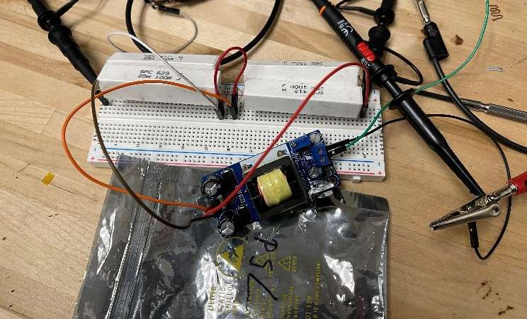
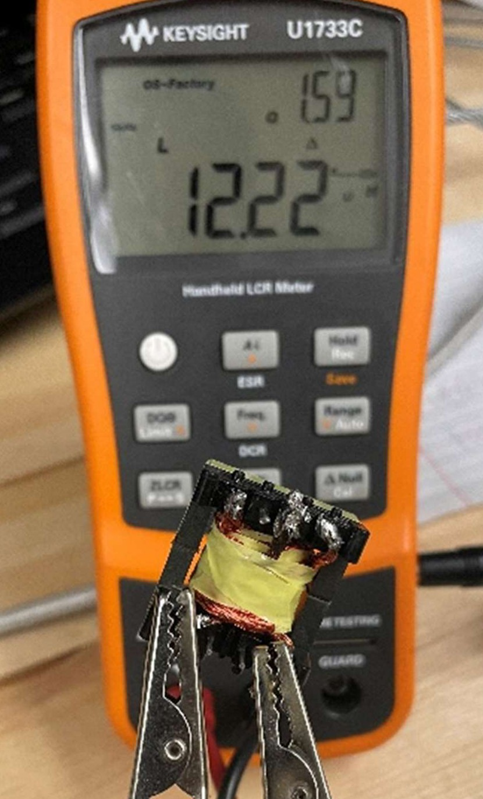

Project 1 of 5. ECEN 828 Power Electronics, Prof. Jun Wang. Term project, team of two.
A dual-output flyback converter, from the magnetics up
The problem
A flyback converter is the smallest way to build an isolated power supply: one switch, one coupled inductor, one diode per output. The specification was an 18 to 30 V input and a regulated ±15 V dual output at 0.3 A per channel, 9 W in total, switching at 100 kHz in discontinuous conduction across the whole input range, with better than 80% efficiency and no forced cooling. The controller, a peak-current-mode LM2587, and every semiconductor on the board were fixed by the project. The coupled inductor was not. It had to be designed, wound, characterized, and made to work.
What I built
The design started with two operating points. For continuous and for discontinuous conduction I derived the turns ratio, magnetizing inductance, and duty cycle that meet the specification at rated load, bounded by the 65 V switch rating, the 40 V output diodes, and the 30 V clamp on the primary, then checked both in a Level-1 PLECS model with an ideal coupled inductor. The discontinuous design carried forward: magnetizing inductance set at the minimum input voltage so the converter never crosses into continuous conduction, peak flux density held below half of saturation, and the maximum duty cycle capped at 0.6 so that peak-current-mode control stays stable. A Level-2 PLECS model then added the core, the air gap, the leakage inductance, and the winding resistance that the real part would have.
Then the part itself. A Ferroxcube E25/13/7 core in 3C94 ferrite, Litz-wire windings, and a Kapton-tape air gap, wound by hand and measured on an LCR meter for magnetizing inductance, leakage inductance, and dc and ac winding resistance. Iterations went back to the bobbin until the measured values sat within tolerance of the design. Only then were the transformer and the rest of the bill of materials soldered onto the PCB.
On the bench
Qualification meant running the converter into 50 Ω per channel and holding both outputs within ±4% of 15 V for three minutes each at 24 V, 18 V, and 30 V input, while input and output power were logged to compute the efficiency. The prototype passed at all three input voltages.
| Property | Requirement |
|---|---|
| Input voltage | 18 to 30 V |
| Output | ±15 V, within ±4% |
| Rated output | 0.3 A per channel, 9 W total |
| Conduction mode at rated load | Discontinuous over the full input range |
| Switching frequency | 100 kHz |
| Efficiency, natural convection | Above 80% |
Mathematical background
- Steady-state converter analysis by inductor volt-second and capacitor charge balance; the boundary between continuous and discontinuous conduction
- Flyback transformer design: turns ratio from device voltage ratings, magnetizing inductance from the conduction-mode requirement, air gap from peak flux density
- Core loss and winding loss estimation, Litz wire and skin depth at 100 kHz
- Peak-current-mode control and its subharmonic instability above 50% duty cycle

